Chapitre 4 Séance 1
Comparaison des effets des régimes pour différentes variables :
masse_oeuf: masse des oeufs,masse_coq: masse de la coquille,epaisseur_coq: épaisseur de la coquille,masse_du_jaune: masse du jaune d’oeuf,masse_du_blanc: masse du blanc d’oeuf,l_int_coq: indicelde l’intérieur de la coquille,a_int_coq: indiceade l’intérieur de la coquille,b_int_coq: indicebde l’intérieur de la coquille,l_jaune: indiceldu jaune d’oeuf,a_jaune: indiceadu jaune d’oeuf,b_jaune: indicebdu jaune d’oeuf,prot_tot: Teneur en protéines totales,chol_tot: Teneur en cholestérol total,lip_tot: Teneur en lipides totales
4.1 Librairies
4.2 Les données
##
## -- Column specification --------------------------------------------------------
## cols(
## seance = col_character(),
## regime = col_character(),
## no_oeuf = col_double(),
## masse_oeuf = col_double(),
## masse_coq = col_double(),
## epaisseur_coq = col_double(),
## masse_du_jaune = col_double(),
## masse_du_blanc = col_double(),
## l_int_coq = col_double(),
## a_int_coq = col_double(),
## b_int_coq = col_double(),
## l_jaune = col_double(),
## a_jaune = col_double(),
## b_jaune = col_double(),
## abs_prot = col_double(),
## prot_tot = col_double(),
## chol_tot = col_double(),
## lip_tot = col_double()
## )4.3 Masse des oeufs : masse_oeuf
4.3.1 Test de normalité, masse des oeufs
Ho. la distribution de l’échantillon est normale (ou n’est pas différente d’une distribution normale).
Si p-value > 0,05 alors la distribution des données n’est pas significativement différente de la distribution normale => On accepte Ho.
## # A tibble: 1 x 3
## variable statistic p
## <chr> <dbl> <dbl>
## 1 masse_oeuf 0.945 0.126p-value > 0.05, alors la distribution des données suit une loi normale.
4.3.2 Test d’homogénéité des variances, masse des oeufs
Ho. Toutes les variances des populations (traitements) sont égales.H1ouHa. Au moins deux d’entre elles diffèrent.
## Levene's Test for Homogeneity of Variance (center = median)
## Df F value Pr(>F)
## group 9 1.1905 0.353
## 20p-value > 0.05 => variances homogènes.
4.3.3 ANOVA, masse des oeufs
Si la valeur p est inférieure au seuil de signification 0,05, on conclut qu’il existe des différences significatives entre les groupes (entre au moins deux groupes).
## Analysis of Variance Table
##
## Response: masse_oeuf
## Df Sum Sq Mean Sq F value Pr(>F)
## regime 9 20.9072 2.32303 5.7365 0.0005679 ***
## Residuals 20 8.0991 0.40495
## ---
## Signif. codes: 0 '***' 0.001 '**' 0.01 '*' 0.05 '.' 0.1 ' ' 1p-value < 0.01, les effets d’au moins deux régimes diffèrent très significativement.
4.3.4 Visualisation boxplots, masse des oeufs
ggplot(data = s1, aes(x = regime, y = masse_oeuf)) +
geom_boxplot() +
#theme_classic() +
xlab("Régimes") + ylab("Masse de l'oeuf") +
theme(axis.text.x = element_text(angle = 45, color = "black", vjust = 1, hjust = 1))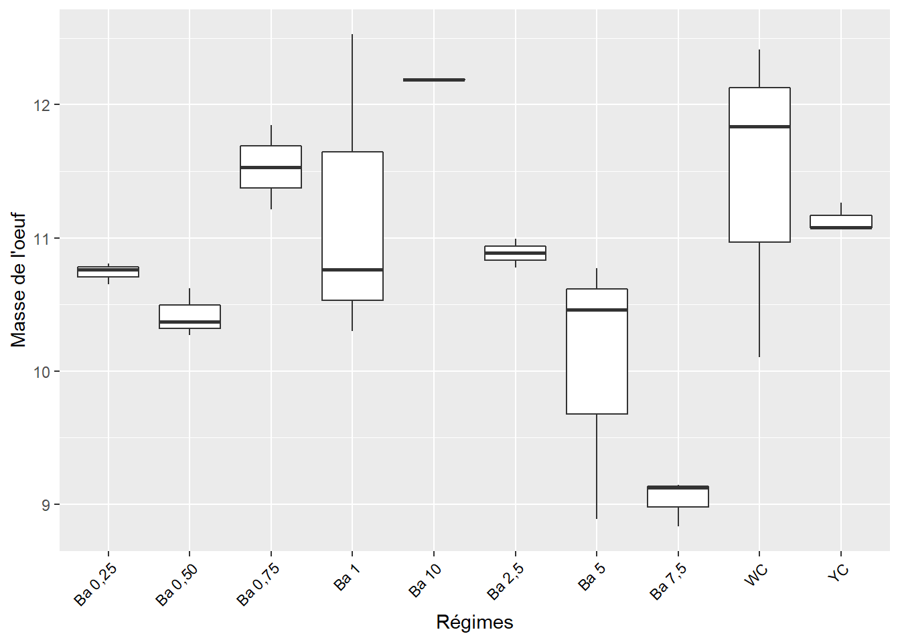
4.3.4.1 Comparaisons par paires, masse des oeufs
Les comparaisons des moyennes par paires :
tb_m1 <- (SNK.test(lm1, "regime", group = TRUE))$groups %>%
mutate(regime = rownames(.)) %>%
select(regime, masse_oeuf, groups) %>%
as_tibble()
tb_m1## # A tibble: 10 x 3
## regime masse_oeuf groups
## <chr> <dbl> <chr>
## 1 Ba 10 12.2 a
## 2 Ba 0,75 11.5 ab
## 3 WC 11.5 ab
## 4 Ba 1 11.2 ab
## 5 YC 11.1 ab
## 6 Ba 2,5 10.9 ab
## 7 Ba 0,25 10.7 ab
## 8 Ba 0,50 10.4 b
## 9 Ba 5 10.0 bc
## 10 Ba 7,5 9.03 c4.3.5 Visualisation des groupes, masse des oeufs
ggplot(data = tb_m1, mapping = aes(x = regime, y = masse_oeuf)) +
geom_bar(stat = "identity", color = "blue", fill = "grey", width = 0.6) +
#ylim(0, 2) +
geom_text(data = tb_m1, aes(label = groups), vjust = -0.5, size = 4) +
theme_classic() +
xlab("Régimes") + ylab("Masse des oeufs (g)") +
theme(axis.text.x = element_text(angle = 45, color = "black", vjust = 1, hjust = 1))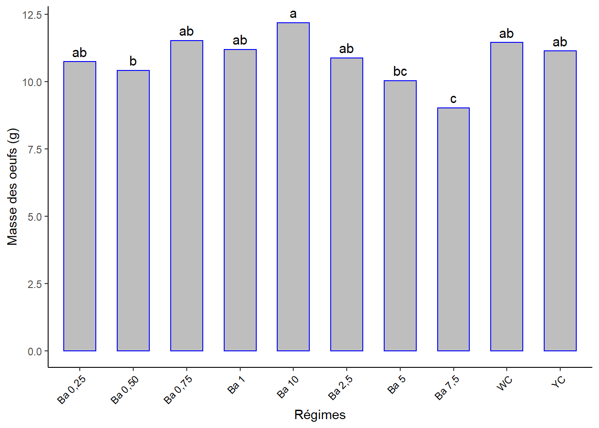
4.4 Masse de la coquille : masse_coq
4.4.1 Test de normalité, masse de la coquille
- Ho. la distribution de l’échantillon est normale (ou n’est pas différente d’une distribution normale).
## # A tibble: 1 x 3
## variable statistic p
## <chr> <dbl> <dbl>
## 1 masse_coq 0.962 0.356p-value > 0.05 => distribution normale.
4.4.2 Test de sphéricité (homogénéité des variances), masse de la coquille
Ho. Toutes les variances des populations sont égales.H1ouHa. Au moins deux d’entre elles diffèrent.
## Levene's Test for Homogeneity of Variance (center = median)
## Df F value Pr(>F)
## group 9 1.1555 0.3727
## 20p-value > 0.05 => variances homogènes.
4.4.3 ANOVA, masse de la coquille
Si la p-value est inférieure au seuil de signification 0.05, on conclut qu’il existe des différences significatives entre les groupes (entre au moins deux groupes).
## Analysis of Variance Table
##
## Response: masse_coq
## Df Sum Sq Mean Sq F value Pr(>F)
## regime 9 0.47716 0.053018 5.306 0.0009252 ***
## Residuals 20 0.19984 0.009992
## ---
## Signif. codes: 0 '***' 0.001 '**' 0.01 '*' 0.05 '.' 0.1 ' ' 1p-value < 0.01 -> au moins deux régimes ont des effets très différents.
4.4.4 Visualisation boxplots, masse de la coquille
ggplot(data = s1, aes(x = regime, y = masse_coq)) +
geom_boxplot() +
#theme_classic() +
xlab("Régimes") + ylab("Masse de la coquille") +
theme(axis.text.x = element_text(angle = 45, color = "black", vjust = 1, hjust = 1))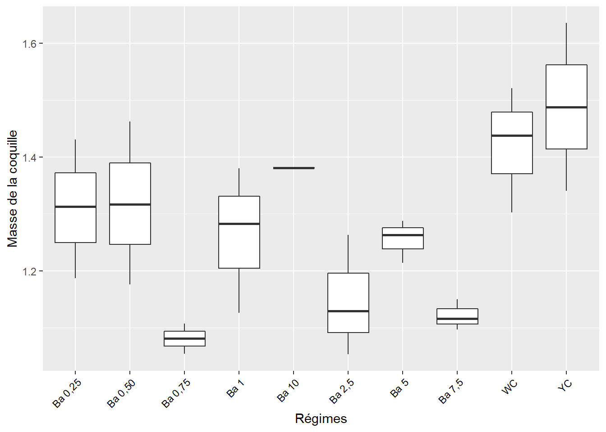
4.4.5 Comparaisons par paires, masse de la coquille
Comparaisons des moyennes par paires
tb_mc1 <- (SNK.test(lmc1, "regime", group = TRUE))$groups %>%
mutate(regime = rownames(.)) %>%
select(regime, masse_coq, groups) %>%
as_tibble()
tb_mc1## # A tibble: 10 x 3
## regime masse_coq groups
## <chr> <dbl> <chr>
## 1 YC 1.49 a
## 2 WC 1.42 a
## 3 Ba 10 1.38 ab
## 4 Ba 0,50 1.32 abc
## 5 Ba 0,25 1.31 abc
## 6 Ba 1 1.26 abc
## 7 Ba 5 1.25 abc
## 8 Ba 2,5 1.15 bc
## 9 Ba 7,5 1.12 bc
## 10 Ba 0,75 1.08 c4.4.6 Visualisation des groupes, masse de la coquille
ggplot(data = tb_mc1, mapping = aes(x = regime, y = masse_coq)) +
geom_bar(stat = "identity", color = "blue", fill = "grey", width = 0.6) +
#ylim(0, 2) +
geom_text(data = tb_mc1, aes(label = groups), vjust = -0.5, size = 4) +
theme_classic() +
xlab("Régimes") + ylab("Masse de la coquille (g)") +
theme(axis.text.x = element_text(angle = 45, color = "black", vjust = 1, hjust = 1))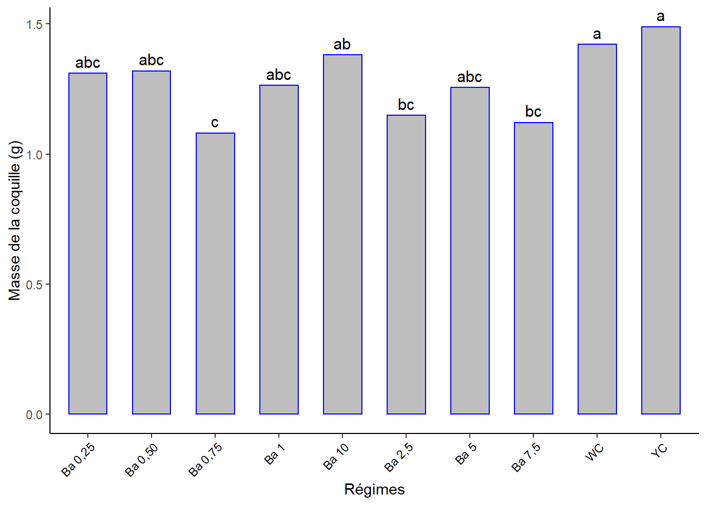
4.5 Épaisseur de la coquille : epaisseur_coq
4.5.1 Test de normalité, épaisseur de la coquille
- Ho. la distribution de l’échantillon est normale (n’est pas différente d’une distribution normale).
## # A tibble: 1 x 3
## variable statistic p
## <chr> <dbl> <dbl>
## 1 epaisseur_coq 0.728 0.00000413p-value < 0.05 => distribution non-normale => Test de Kruskal-Wallis, alternative non paramétrique au test ANOVA à un facteur. Recommandé lorsque les hypothèses du test ANOVA à un facteur ne sont pas respectées.
4.5.2 Test de Kruskal-Walli, épaisseur de la coquille
## # A tibble: 1 x 6
## .y. n statistic df p method
## * <chr> <int> <dbl> <int> <dbl> <chr>
## 1 epaisseur_coq 30 15.8 9 0.0703 Kruskal-Wallisp-value > 0.05 => il n’y a pas de différence significative entre les effets des différents régimes au seuil de 5%.
4.6 Masse du jaune d’oeuf : masse_du_jaune
4.6.1 Test de normalité, masse du jaune
- Ho. la distribution de l’échantillon est normale (ou n’est pas différente d’une distribution normale).
## # A tibble: 1 x 3
## variable statistic p
## <chr> <dbl> <dbl>
## 1 masse_du_jaune 0.938 0.0806p-value > 0.05 => distribution normale.
4.6.2 Test de sphéricité, masse du jaune
Ho. Toutes les variances des populations sont égales.H1ouHa. Au moins deux d’entre elles diffèrent.
## Levene's Test for Homogeneity of Variance (center = median)
## Df F value Pr(>F)
## group 9 0.8568 0.5761
## 20p-value > 0.05, => variances homogènes.
4.6.3 ANOVA, masse du jaune
## Analysis of Variance Table
##
## Response: masse_du_jaune
## Df Sum Sq Mean Sq F value Pr(>F)
## regime 9 2.3814 0.26460 2.5136 0.04128 *
## Residuals 20 2.1054 0.10527
## ---
## Signif. codes: 0 '***' 0.001 '**' 0.01 '*' 0.05 '.' 0.1 ' ' 1p-value < 0.05 => au moins deux régimes ont des effets différents.
4.6.4 Visualisation boxplots masse du jaune
ggplot(data = s1, aes(x = regime, y = masse_du_jaune)) +
geom_boxplot() +
#theme_classic() +
xlab("Régimes") + ylab("Masse du jaune d'oeuf (g)") +
theme(axis.text.x = element_text(angle = 45, color = "black", vjust = 1, hjust = 1))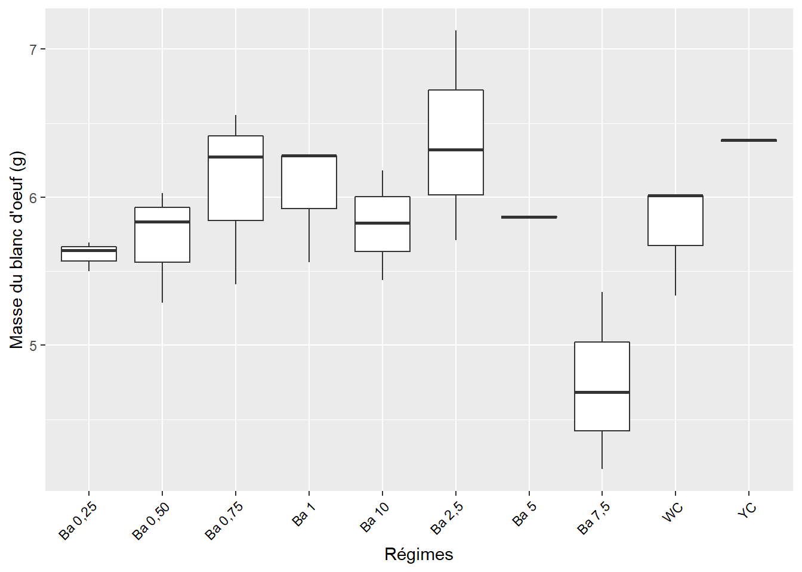
4.6.5 Comparaisons par paires, masse du jaune
Comparaisons des moyennes par paires :
tb_mj1 <- (SNK.test(lmj1, "regime", group = TRUE))$groups %>%
mutate(regime = rownames(.)) %>%
select(regime, masse_du_jaune, groups) %>%
as_tibble()
tb_mj1## # A tibble: 10 x 3
## regime masse_du_jaune groups
## <chr> <dbl> <chr>
## 1 WC 3.98 a
## 2 Ba 2,5 3.82 ab
## 3 Ba 10 3.81 ab
## 4 Ba 1 3.81 ab
## 5 Ba 0,75 3.61 ab
## 6 YC 3.56 ab
## 7 Ba 0,25 3.43 ab
## 8 Ba 0,50 3.35 ab
## 9 Ba 5 3.31 ab
## 10 Ba 7,5 3.01 b4.6.6 Visualisation des groupes, bareplots avec labels, masse du jaune
ggplot(data = tb_mj1, mapping = aes(x = regime, y = masse_du_jaune)) +
geom_bar(stat = "identity", color = "blue", fill = "grey", width = 0.6) +
#ylim(0, 2) +
geom_text(data = tb_mj1, aes(label = groups), vjust = -0.5, size = 4) +
theme_classic() +
xlab("Régimes") + ylab("Masse du jaune d'oeuf (g)") +
theme(axis.text.x = element_text(angle = 45, color = "black", vjust = 1, hjust = 1))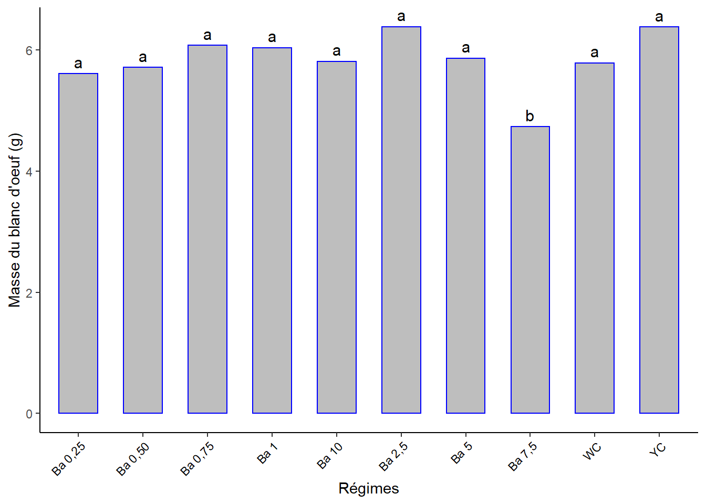
4.7 Masse du blanc d’oeuf : masse_du_blanc
4.7.1 Test de normalité, masse du blanc
- Ho. la distribution de l’échantillon est normale (ou n’est pas différente d’une distribution normale).
## # A tibble: 1 x 3
## variable statistic p
## <chr> <dbl> <dbl>
## 1 masse_du_blanc 0.932 0.0544p-value > 0.05 => distribution normale.
4.7.2 Test de sphéricité, masse du blanc
Ho. Toutes les variances des populations sont égales.H1ouHa. Au moins deux d’entre elles diffèrent.
## Levene's Test for Homogeneity of Variance (center = median)
## Df F value Pr(>F)
## group 9 0.7581 0.6545
## 20p-value > 0.05 => variances homogènes.
4.7.3 ANOVA, masse du blanc
## Analysis of Variance Table
##
## Response: masse_du_blanc
## Df Sum Sq Mean Sq F value Pr(>F)
## regime 9 9.829 1.0921 5.694 0.0005954 ***
## Residuals 20 3.836 0.1918
## ---
## Signif. codes: 0 '***' 0.001 '**' 0.01 '*' 0.05 '.' 0.1 ' ' 1p-value < 0.01 => au moins deux régimes ont des effets significativement très différents.
4.7.4 Visualisation boxplots masse du blanc
ggplot(data = s1, aes(x = regime, y = masse_du_blanc)) +
geom_boxplot() +
#theme_classic() +
xlab("Régimes") + ylab("Masse du blanc d'oeuf (g)") +
theme(axis.text.x = element_text(angle = 45, color = "black", vjust = 1, hjust = 1))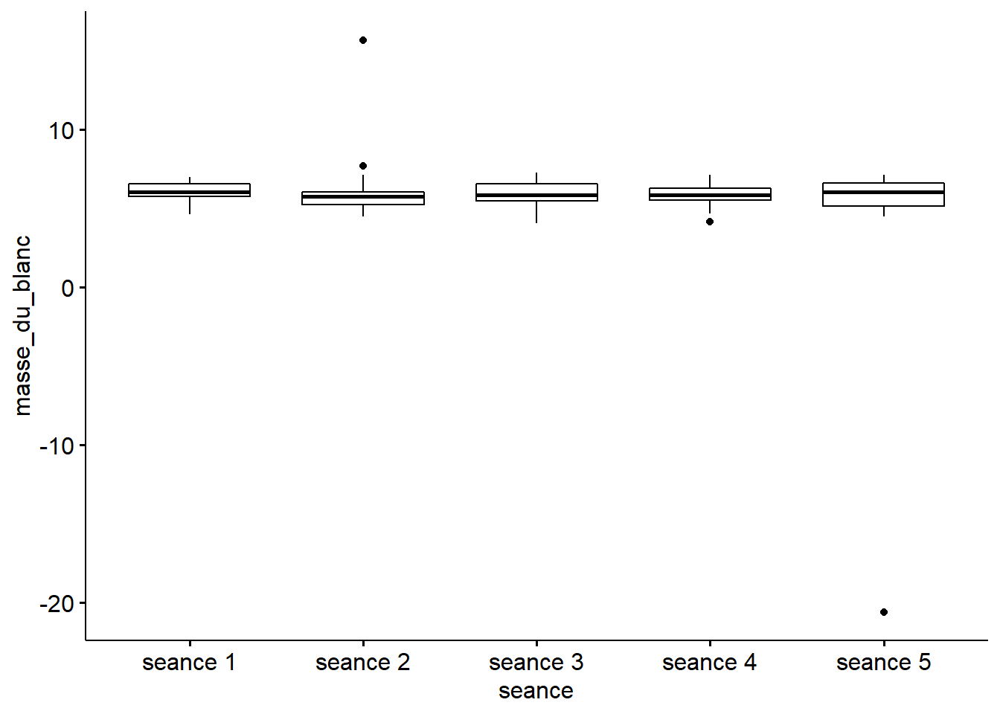
4.7.5 Comparaisons par paires, masse du jaune
Comparaisons des moyennes par paires :
tb_mb1 <- (SNK.test(lmb1, "regime", group = TRUE))$groups %>%
mutate(regime = rownames(.)) %>%
select(regime, masse_du_blanc, groups) %>%
as_tibble()
tb_mb1## # A tibble: 10 x 3
## regime masse_du_blanc groups
## <chr> <dbl> <chr>
## 1 Ba 10 7.00 a
## 2 Ba 0,75 6.84 ab
## 3 Ba 1 6.13 abc
## 4 YC 6.09 abc
## 5 WC 6.05 abc
## 6 Ba 0,25 6.00 abc
## 7 Ba 2,5 5.92 abc
## 8 Ba 0,50 5.75 bcd
## 9 Ba 5 5.47 cd
## 10 Ba 7,5 4.90 d4.7.6 Visualisation des groupes, bareplots avec labels
ggplot(data = tb_mb1, mapping = aes(x = regime, y = masse_du_blanc)) +
geom_bar(stat = "identity", color = "blue", fill = "grey", width = 0.6) +
#ylim(0, 2) +
geom_text(data = tb_mb1, aes(label = groups), vjust = -0.5, size = 4) +
theme_classic() +
xlab("Régimes") + ylab("Masse du blanc d'oeuf (g)") +
theme(axis.text.x = element_text(angle = 45, color = "black", vjust = 1, hjust = 1))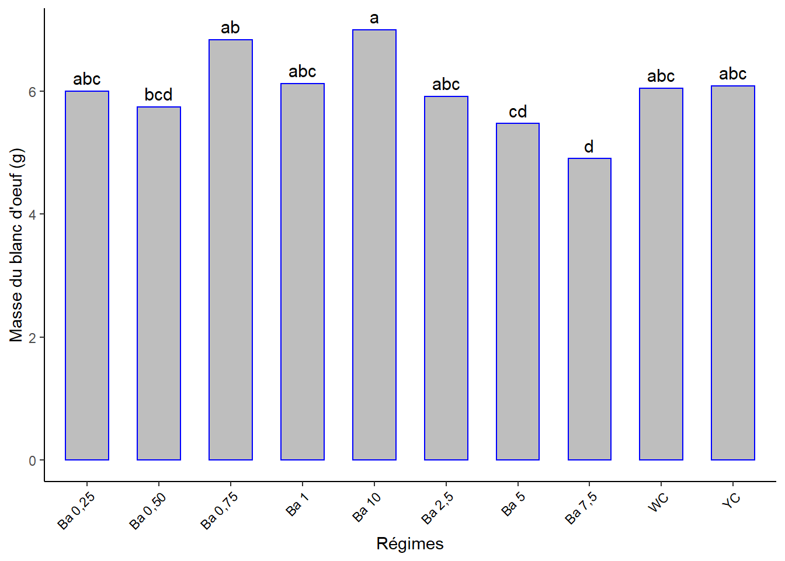
4.8 Indice l de l’intérieur de la coquille : l_int_coq
4.8.1 Test de normalité, Indice l
- Ho. la distribution de l’échantillon est normale (ou n’est pas différente d’une distribution normale).
## # A tibble: 1 x 3
## variable statistic p
## <chr> <dbl> <dbl>
## 1 l_int_coq 0.415 7.46e-10p-value <- 0.01 => distribution non normale => Alternative non-paramétrique : test de Kruskal-Wallis.
4.8.2 Test de Kruskal-Walli, indice l
## # A tibble: 1 x 6
## .y. n statistic df p method
## * <chr> <int> <dbl> <int> <dbl> <chr>
## 1 l_int_coq 30 9.98 9 0.352 Kruskal-Wallisp-value > 0.05 => il n’y a pas de différence significative entre les effets des différents régimes au seuil de 5%.
4.9 Indice a de l’intérieur de la coquille : a_int_coq
4.9.1 Test de normalité, Indice a
- Ho. la distribution de l’échantillon est normale (ou n’est pas différente d’une distribution normale).
## # A tibble: 1 x 3
## variable statistic p
## <chr> <dbl> <dbl>
## 1 a_int_coq 0.868 0.00151p-value < 0.05 => distribution non normale. Alternative non-paramétrique : test de Kruskal-Wallis.
4.9.2 Test de Kruskal-Walli, indice a
## # A tibble: 1 x 6
## .y. n statistic df p method
## * <chr> <int> <dbl> <int> <dbl> <chr>
## 1 a_int_coq 30 13.4 9 0.145 Kruskal-Wallisp-value > 0.05 => il n’y a pas de différence significative entre les effets des différents régimes au seuil de 5%.
4.10 Indice b de l’intérieur de la coquille : b_int_coq
4.10.1 Test de normalité, Indice b
- Ho. la distribution de l’échantillon est normale (ou n’est pas différente d’une distribution normale).
## # A tibble: 1 x 3
## variable statistic p
## <chr> <dbl> <dbl>
## 1 b_int_coq 0.436 0.00000000121p-value < 0.05 => distribution non-normale. Alternative non-paramétrique : test de Kruskal-Wallis.
4.10.2 Test de Kruskal-Walli, indice b
## # A tibble: 1 x 6
## .y. n statistic df p method
## * <chr> <int> <dbl> <int> <dbl> <chr>
## 1 b_int_coq 30 20.2 9 0.017 Kruskal-Wallisp-value < 0.05 => il y a une différence entre au moins deux effets de régimes au seuil de 5%.
4.10.3 Test de Dunn, indice b
Pour identifier les groupes différents. Il y a 45 paires à comparer, je choisi d’afficher seulement les groupes différents :
s1 %>%
dunn_test(b_int_coq ~ regime, p.adjust.method = "bonferroni") %>%
select(group1, group2, p, p.adj, p.adj.signif) %>%
filter(p.adj.signif != "ns")## # A tibble: 1 x 5
## group1 group2 p p.adj p.adj.signif
## <chr> <chr> <dbl> <dbl> <chr>
## 1 Ba 0,75 WC 0.000707 0.0318 *Ba 0,75 et WC sont significativement différents. Le plus grand a l’effet moyen le plus élevé. Pas de différence significative avec les autres.
Je calcule les moyennes et écart-types pour visualiser les groupes :
s1 %>%
select(regime, b_int_coq) %>%
group_by(regime) %>%
get_summary_stats(b_int_coq, type = "mean_sd") %>%
select(-variable)## # A tibble: 10 x 4
## regime n mean sd
## <fct> <dbl> <dbl> <dbl>
## 1 Ba 0,25 3 13.0 1.05
## 2 Ba 0,50 3 13.8 0.943
## 3 Ba 0,75 3 12.4 0.305
## 4 Ba 1 3 14.1 3.22
## 5 Ba 10 3 13.1 0
## 6 Ba 2,5 3 16.1 1.08
## 7 Ba 5 3 15.2 0.348
## 8 Ba 7,5 3 15.3 3.18
## 9 WC 3 40.2 27.0
## 10 YC 3 18.7 3.604.11 Indice l du jaune d’oeuf : l_jaune
4.11.1 Test de normalité, Indice l du jaune
- Ho. la distribution de l’échantillon est normale (ou n’est pas différente d’une distribution normale).
## # A tibble: 1 x 3
## variable statistic p
## <chr> <dbl> <dbl>
## 1 l_jaune 0.919 0.0259p-value < 0.05 => distribution non normale => Alternative non-paramétrique : test de Kruskal-Wallis recommandé lorsque les hypothèses du test ANOVA à un facteur ne sont pas respectées.
4.11.2 Test de Kruskal-Walli, l du jaune
## # A tibble: 1 x 6
## .y. n statistic df p method
## * <chr> <int> <dbl> <int> <dbl> <chr>
## 1 l_jaune 30 15.4 9 0.0802 Kruskal-Wallisp-value > 0.05 => il n’y a pas de différence significative entre les effets des différents régimes au seuil de 5%.
4.12 Indice a du jaune d’oeuf : a_jaune
4.12.1 Test de normalité, Indice a du jaune
- Ho. la distribution de l’échantillon est normale (ou n’est pas différente d’une distribution normale).
## # A tibble: 1 x 3
## variable statistic p
## <chr> <dbl> <dbl>
## 1 a_jaune 0.776 0.0000242p-value < 0.05 => distribution non normale. Alternative non-paramétrique : test de Kruskal-Wallis.
4.12.2 Test de Kruskal-Walli, a du jaune
## # A tibble: 1 x 6
## .y. n statistic df p method
## * <chr> <int> <dbl> <int> <dbl> <chr>
## 1 a_jaune 30 18.0 9 0.0355 Kruskal-Wallisp-value < 0.05 => il y a une différence entre au moins deux effets de régimes au seuil de 5%.
4.12.3 Test de Dunn, a du jaune
Pour identifier les groupes différents.
s1 %>%
dunn_test(a_jaune ~ regime, p.adjust.method = "bonferroni") %>%
select(group1, group2, p, p.adj, p.adj.signif) %>%
filter(p.adj.signif != "ns")## # A tibble: 0 x 5
## # ... with 5 variables: group1 <chr>, group2 <chr>, p <dbl>, p.adj <dbl>,
## # p.adj.signif <chr>… Pas de différences ? à revoir !
4.13 Indice b du jaune d’oeuf : b_jaune
4.13.1 Test de normalité, Indice b du jaune
- Ho. la distribution de l’échantillon est normale (ou n’est pas différente d’une distribution normale).
## # A tibble: 1 x 3
## variable statistic p
## <chr> <dbl> <dbl>
## 1 b_jaune 0.644 0.000000264p-value < 0.05 => distribution non normale. Alternative non-paramétrique : test de Kruskal-Wallis.
4.13.2 Test de Kruskal-Walli, b du jaune
## # A tibble: 1 x 6
## .y. n statistic df p method
## * <chr> <int> <dbl> <int> <dbl> <chr>
## 1 b_jaune 30 21.5 9 0.0108 Kruskal-Wallisp-value < 0.05 => il y a une différence entre au moins deux effets de régimes au seuil de 5%.
4.13.3 Test de Dunn, b du jaune
Pour identifier les groupes différents.
s1 %>%
dunn_test(b_jaune ~ regime, p.adjust.method = "bonferroni") %>%
select(group1, group2, p, p.adj, p.adj.signif) %>%
filter(p.adj.signif != "ns")## # A tibble: 0 x 5
## # ... with 5 variables: group1 <chr>, group2 <chr>, p <dbl>, p.adj <dbl>,
## # p.adj.signif <chr>… Pas de différences ? à revoir !
4.14 Teneur en protéines totales : prot_tot
4.14.1 Test de normalité, protéines
- Ho. la distribution de l’échantillon est normale (ou n’est pas différente d’une distribution normale).
## # A tibble: 1 x 3
## variable statistic p
## <chr> <dbl> <dbl>
## 1 prot_tot 0.935 0.0679p-value > 0.05 => distribution normale.
4.14.2 Test de sphéricité, protéines
Ho. Toutes les variances des populations sont égales.H1ouHa. Au moins deux d’entre elles diffèrent.
## Levene's Test for Homogeneity of Variance (center = median)
## Df F value Pr(>F)
## group 9 0.5357 0.8315
## 20p-value > 0.05, => variances homogènes.
4.14.3 ANOVA, protéines
## Analysis of Variance Table
##
## Response: prot_tot
## Df Sum Sq Mean Sq F value Pr(>F)
## regime 9 10.1219 1.1247 6.2482 0.0003268 ***
## Residuals 20 3.5999 0.1800
## ---
## Signif. codes: 0 '***' 0.001 '**' 0.01 '*' 0.05 '.' 0.1 ' ' 1p-value < 0.01 => au moins deux régimes ont des effets significativement très différents.
4.14.4 Visualisation boxplots, protéines
ggplot(data = s1, aes(x = regime, y = prot_tot)) +
geom_boxplot() +
#theme_classic() +
xlab("Régimes") + ylab("Protéines totales (g)") +
theme(axis.text.x = element_text(angle = 45, color = "black", vjust = 1, hjust = 1))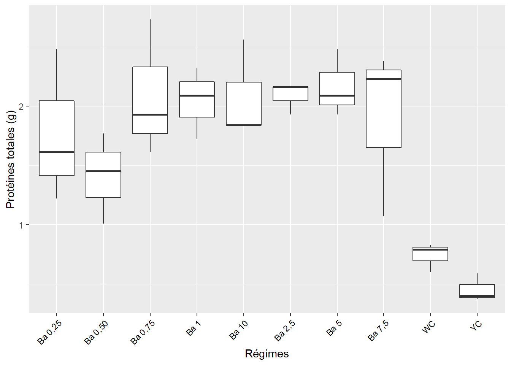
4.14.5 Comparaisons par paires, protéines
Comparaisons des moyennes par paires :
tb_p1 <- (SNK.test(lp1, "regime", group = TRUE))$groups %>%
mutate(regime = rownames(.)) %>%
select(regime, prot_tot, groups) %>%
as_tibble()
tb_p1## # A tibble: 10 x 3
## regime prot_tot groups
## <chr> <dbl> <chr>
## 1 Ba 5 2.17 a
## 2 Ba 0,75 2.09 a
## 3 Ba 2,5 2.08 a
## 4 Ba 10 2.08 a
## 5 Ba 1 2.04 a
## 6 Ba 7,5 1.89 a
## 7 Ba 0,25 1.77 a
## 8 Ba 0,50 1.41 ab
## 9 WC 0.74 bc
## 10 YC 0.453 c4.14.6 Visualisation des groupes, bareplots avec labels, protéines
ggplot(data = tb_p1, mapping = aes(x = regime, y = prot_tot)) +
geom_bar(stat = "identity", color = "blue", fill = "grey", width = 0.6) +
#ylim(0, 2) +
geom_text(data = tb_p1, aes(label = groups), vjust = -0.5, size = 4) +
theme_classic() +
xlab("Régimes") + ylab("Protéines totales (g)") +
theme(axis.text.x = element_text(angle = 45, color = "black", vjust = 1, hjust = 1))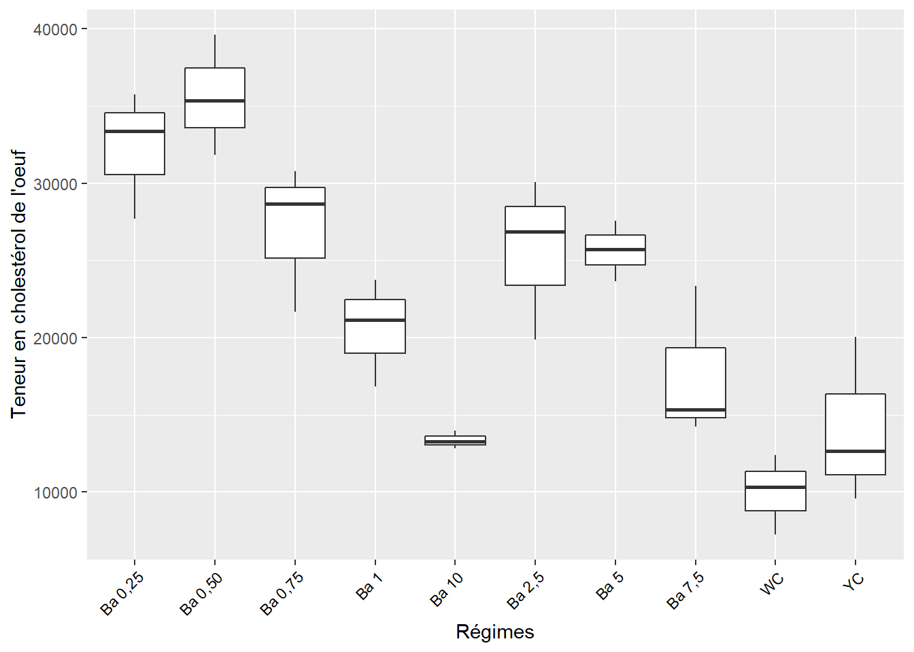
4.15 Teneur en cholestérol total : chol_tot
4.15.1 Test de normalité, cholestérol
- Ho. la distribution de l’échantillon est normale (ou n’est pas différente d’une distribution normale).
## # A tibble: 1 x 3
## variable statistic p
## <chr> <dbl> <dbl>
## 1 chol_tot 0.905 0.0113p-value < 0.05 => distribution non normale. Alternative non-paramétrique : test de Kruskal-Wallis.
4.15.2 Test de Kruskal-Walli, chol_tot
## # A tibble: 1 x 6
## .y. n statistic df p method
## * <chr> <int> <dbl> <int> <dbl> <chr>
## 1 chol_tot 30 17.2 9 0.0461 Kruskal-Wallisp-value < 0.05 => il y a une différence entre au moins deux effets de régimes au seuil de 5%.
4.15.3 Test de Dunn, chol_tot
Pour identifier les groupes différents.
s1 %>%
dunn_test(chol_tot ~ regime, p.adjust.method = "bonferroni") %>%
select(group1, group2, p, p.adj, p.adj.signif) %>%
filter(p.adj.signif != "ns")## # A tibble: 0 x 5
## # ... with 5 variables: group1 <chr>, group2 <chr>, p <dbl>, p.adj <dbl>,
## # p.adj.signif <chr>… pas de différences ? Peut-être la justesse de la p-value qui est …=… 0.05 ?
4.16 Teneur en lipides totales : lip_tot
4.16.1 Test de normalité, lipides
- Ho. la distribution de l’échantillon est normale (ou n’est pas différente d’une distribution normale).
## # A tibble: 1 x 3
## variable statistic p
## <chr> <dbl> <dbl>
## 1 lip_tot 0.978 0.816p-value > 0.05 => distribution normale.
4.16.2 Test de sphéricité, lipides
Ho. Toutes les variances des populations sont égales.H1ouHa. Au moins deux d’entre elles diffèrent.
## Levene's Test for Homogeneity of Variance (center = median)
## Df F value Pr(>F)
## group 9 0.735 0.6731
## 17p-value > 0.05 => variances homogènes.
4.16.3 ANOVA, lipides
## Analysis of Variance Table
##
## Response: lip_tot
## Df Sum Sq Mean Sq F value Pr(>F)
## regime 9 872.25 96.917 1.7694 0.1487
## Residuals 17 931.15 54.773p-value > 0.05 => Pas de différence entre les effets des régimes.
4.17 Exploration des corrélations, séance 1
Le corrélogramme suivant met en évidence les éventuelles corrélations dans les séries de données.
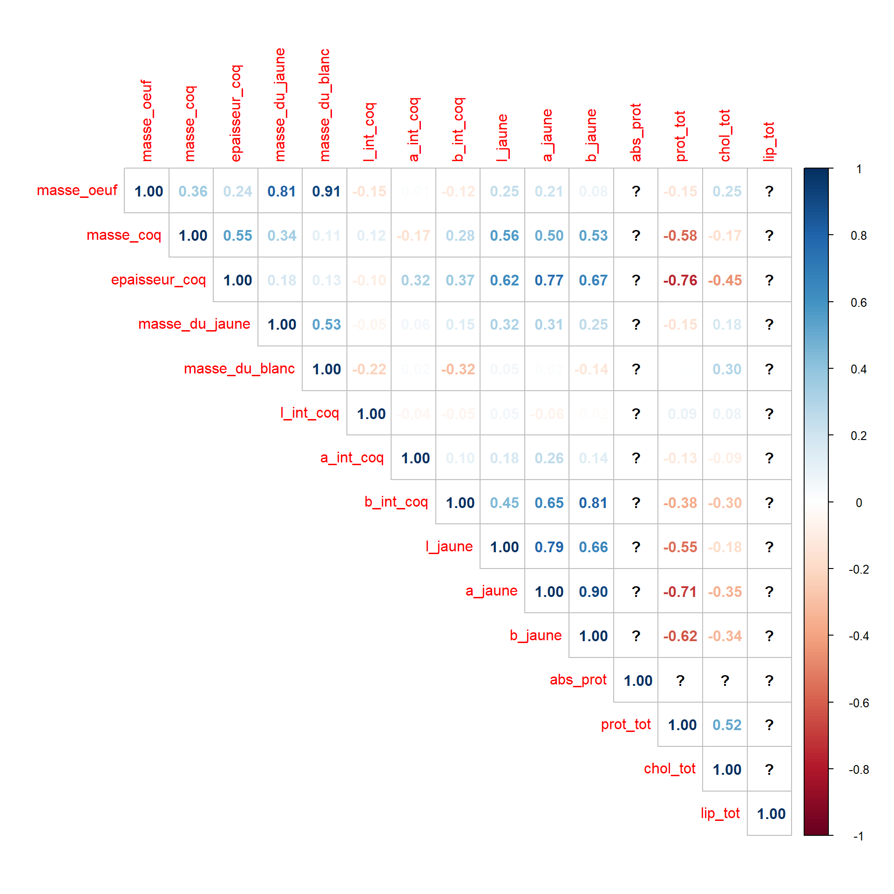
Les corrélations positives sont en bleu et les négatives en rouge. Moins la corrélation est importante, moins les chiffres sont visibles (plus, ils sont flous). Là où il y a des points d’intérrogation c’est que la variable contient des valeurs manquantes. Je les ai juste laissé comme tels si non il y a moyen de calculer sans les valeurs manquantes.
On peut donc décéler celles dont l’interprétation peut être intéressante en science.
Visualisons graphiquement (un cas) la forte corrélation entre la masse de l’oeuf et celle du blanc d’oeuf (r = 0.91).
droitereg <- y ~ x
ggplot(data = s1, aes(x = masse_oeuf, y = masse_du_blanc)) +
geom_point() +
geom_smooth(method = lm, formula = droitereg) +
stat_poly_eq(formula = droitereg,
eq.with.lhs = "italic(hat(y))~`=`~",
aes(label = paste(..eq.label.., ..rr.label.., sep = "~~~")),
parse = TRUE)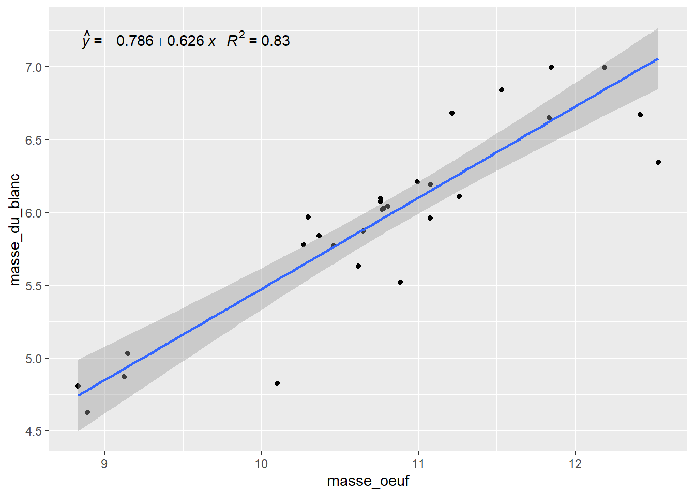